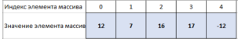

Содержание
Допустим, у вам необходимо хранить в вашей программе 10 целочисленных значений. С одной стороны, если вам не лень (и не жалко тех, кто будет смотреть Ваш код) вы можете объявить 10 переменных типа int, инициализировать их и работать. А что делать, если требуется 100 значений или 1000? Опять же, можно сходить с ума и заводить под каждое значение отдельную переменную, а можно сделать проще — объявить переменную-массив и хранить в ней все значения.
Массив — это структура данных, которая содержит ряд переменных одного типа, доступ к которым осуществляется по индексу. Массивы в C# могут быть одномерными, многомерными, пустыми, также в C# массивы могут быть зубчатыми (массивы массивов). Но обо всём по порядку.
Чтобы объявить массив в C# необходимо использовать следующую конструкцию:
Type[] ArrayName
где Type — это тип элементов массива, а ArrayName — его имя. То есть, визуально, массив от обычной переменной отличает наличие после названия типа данных квадратных скобок. Например, вот так можно определить массив целых чисел типа int:
int[] array;
Так можно объявить массивы строк и вещественных чисел:
double[] doubleArray;
string[] stringArray;
Как мы уже знаем, объявить переменную — это только часть работы. Переменную необходимо инициализировать. При всех своих возможностях, C# никак не может знать сколько элементов будет содержать наш массив — 0, 10, 1000 и так далее. Сами массивы имеют ссылочный тип, и объявление переменной массива только выделяет память для ссылки на экземпляр массива. Фактические экземпляры массива создаются динамически во время выполнения с помощью оператора new. Операция new указывает длину нового экземпляра массива, которая остается неизменной в течение всего времени существования этого экземпляра.
Например, создадим массив, который будет хранить 5 чисел типа int:
int[] intArray = new int[5];
Теперь у нас есть экземпляр массива, который может хранить пять чисел. По умолчанию C# задал каждому элементу значение 0 (ноль). Проверить это легко с помощью уже известного нам цикла foreach:
int[] intArray = new int[5];
foreach (int i in intArray)
{
Console.WriteLine(intArray[i]);
}
Если создается массив, содержащий элементы ссылочного типа, то всем элементам по умолчанию будет присвоено значение null. Чтобы задать каждому элементу массива свое значение можно обратиться к нему по его индексу. В C# элементы массива получают индексы от 0 до значение длина-1. Для нашего массива задать элементы можно вот так:
intArray[0] = 10; //задаем значение первого элемента
intArray[1] = 7; //задаем значение второго элемента
intArray[2] = -3; //задаем значение третьего элемента
intArray[3] = 18; //задаем значение четвертого элемента
intArray[4] = -125; //задаем значение пятого элемента
Язык C# достаточно гибкий, поэтому разработчики языка предусмотрели и тот вариант, что уже на этапе создания массива вы можете знать какие значения будут содержать его элементы, в этом случае, мы можем использовать такую конструкцию:
int[] intArray = new int[5] { 10, 7, -3, 18, -125};
Здесь мы объявили переменную-массив, инициализировали её и сразу задали каждому элементы своё значение. Оба варианта: и задание значения каждому элементу в по-отдельности и как в примере выше полностью равнозначны. Но и на этом разработчики C# не остановились, чтобы дать разработчику максимум удобства работы с этим языком программирования. Ниже я покажу какие ещё варианты создания массивов могут применяться в C# на примере всё того же массива из пяти чисел:
int[] intArray2 = new int[] { 10, 7, -3, 18, -125 };
int[] intArray3 = new[] { 10, 7, -3, 18, -125 };
int[] intArray4 = { 10, 7, -3, 18, -125 };
Итого — целых пять возможных вариантов того, как задать массив в C#.
До сих пор мы имели дело с так называемыми одномерными массивами, которые можно себе представить в уме как ряд переменных (числовых, строковых, символьных и т.д.). Визуально, наши одномерные массивы выглядели так:

Однако, на одном измерении массива C# не заканчивается. Теоретически мы можем задать массив с любым количеством измерений (которые кстати, называются рангом), но на практике, обычно встречаются одно-, двух- и намного реже — трехмерные массивы. Образно, двумерный массив можно представить как обычную таблицу, а трехмерный массив — как куб переменных. Например, чтобы задать двумерный массив чисел (ранг = 2), необходима сделать вот такое объявление переменной:
int[,] TwoDimArray;
обратите внимание на запятую в квадратных скобках. В C# существует простое правило: ранг массива всегда на единицу больше количества запятых в квадратных скобках. Массив с рангом равным 3 (трехмерный) будет объявляться так:
int[,,] ThreeDimArray;
Инициализируются многомерные массивы точно также, как и одномерные — необходимо задать количество элементов в каждом измерении. Например, зададим массив состоящий из двух столбцов и пяти строк:
int[,] array = new int[5, 2] { { 0, 1 },
{ 2, 3 },
{ 4, 5 },
{ 6, 7 },
{ 8, 9 }
};
Теперь, чтобы обратиться как какому-либо элементу массива, нам необходимо указывать два индекса — индекс строки и индекс столбца. Например, получим значение из четвертой строки второго столбца. Так как нумерация элементов в массивах начинается с нуля, то код будет такой:
Console.WriteLine(array[3, 1]);
//OUTPUT: 7
Для создания многомерных массивов могут использоваться те же самые языковые конструкции, которые показаны выше для одномерных массивов. Возможно, что на первом этапе работы с массивами в C# сложность будет представлять перебор элементов многомерных массивов. На самом деле, ничего сложного в этом нет.
Для того, чтобы показать перебор элементов многомерных массивов, нам придётся забежать немного вперед и прояснить для себя один момент. В C# массивы представляют собой объекты со своими свойствами и методами. Если Вы имели дело с другими языками программирования, например, с Delphi, то знаете, что для получения, например, длины массива необходимо использовать отдельный метод — Length(). В C# же, в силу того, что массив — это объект, вы можете вызвать методы и читать свойства этого объекта просто написав его имя и нажав точку.
Подобная функциональность C# достаточно сильно упрощает изучение языка — нам не надо держать в голове перечень отдельных методов для работу с тем или иным типов данных, всё, что нам необходимо — это вызвать список методов и свойств объекта и выбрать необходимый. О том, как такое поведение
Массив массивов — это массив, элементы которого сами являются массивами. Элементы массива массивов могут иметь различные измерения и размеры. Массив массивов также иногда называется нерегулярным или зубчатым массивом. Объявление массива массивов выглядит следующим образом:
int[][] array = new int[3][];
здесь мы объявили массив массивов на три элемента где каждый элемент — это отдельный массив. Так как массивы в C# относятся к ссылочным типам данных, то по умолчанию каждый элемент массива равен null и, чтобы использовать элементы такого массива, нам необходимо их также инициализировать. Например, так:
array[0] = new int[2];
array[1] = new int[3];
array[2] = new int[4];
Теперь наш массив содержит три массива на 2, 3 и 4 элемента соответственно и каждый из этих массивов будет содержать целые числа. Чтобы заполнить массив значениями элементов, можно воспользоваться любым из способов, которые мы рассмотрели для одномерных массивов, например, так:
int[][] array = new int[][]
{
new int[] { 1, 2},
new int[] { 3, 4, 5 },
new int[] { 6, 7, 8, 9 }
};
Для доступа к элементам массива массивов необходимо использовать вот такую языковую конструкцию:
array[0][1]
//2
Как и обычные переменные, C# допускает объявление неявно типизированных массивов. При этом, компилятор сам определить наиболее подходящий тип элементов такого массива. Например,
var a = new[] { 1, 10, 100, 1000 }; // int[]
var b = new[] { "hello", null, "world" }; // string[]
При этом, если Вы попытаетесь объявить вот такой массив:
var с = new[] { 1, null, "world" };
то компилятор C# вернет следующую ошибку.
Итак, сегодня мы рассмотрели массивы в C# — для чего нужны массивы, какие бывают массивы, как получить доступ к элементам массива, а также их основные свойства и методы в C#. Возможно, что пока тяжело понять всю мощь и преимущества использования массивов в программировании, но, со временем всё встанет на свои места.